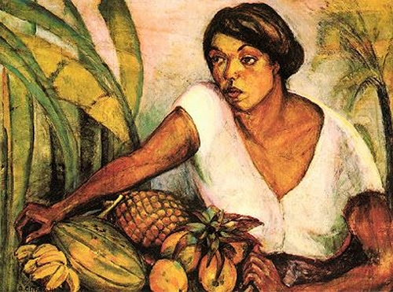
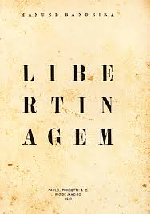
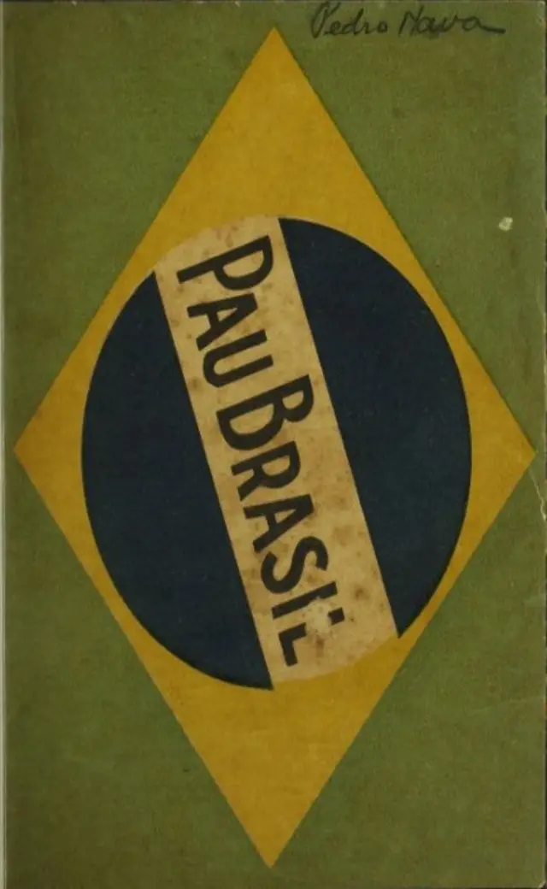
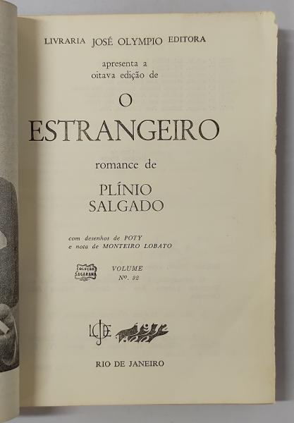

Abaporu

Concebido em 1928 por Tarsila do Amaral, o quadro “O Abaporu” foi na verdade um presente de aniversário ao seu marido à época, Oswald de Andrade.
Abaporu é uma pintura a óleo da artista brasileira Tarsila do Amaral. É uma das principais obras do período antropofágico do movimento modernista no Brasil.
Tropical
Foi produzido por Anita Malafatti, em 1917.
Ao representar a flora e as frutas tropicais típicas do Brasil, a autora buscava valorizar o que é nacional.
A artista não utiliza de nenhum padrão renascentista em sua obra, o que mostra a vontade modernista de romper com os valores clássicos
Libertinagem
Libertinagem é o quarto livro de poesia do escritor brasileiro Manuel Bandeira, publicado em 1930. É composto por 38 poemas, entre os quais se destacam Pneumotórax, Pensão familiar, Profundamente e Vou-me embora pra Pasárgada. Os poemas de Libertinagem contém humor, erotismo e refinamento musical.
Manifesto da Poesia Pau-Brasil
Esrito por Oswald de Andrade em 18 de março de 1924.
Manifesto da Poesia Pau-Brasil é um manifesto que apresenta as noções estéticas que iriam nortear o seu trabalho em poesia e o de outros modernistas brasileiros, influenciando também a escrita de poetas estrangeiros, como o francês Blaise Cendrars.
O Estrangeiro
Escrito em 1926 O estrangeiro, ou O extrangeiro, como se escrevia naquele tempo, foi o primeiro romance escrito por Plínio Salgado
Destaca a figura do imigrante no desenvolvimento da nação e aprofunda a crítica à sociedade de então, refletindo sobre o modelo nacionalista a ser empregado no Brasil. Esta pesquisa buscará analisar esta obra em interface com as propostas dos eugenistas paulistas sobre a questão da imigração.